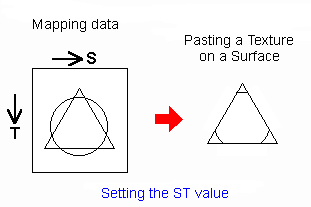

As a final step, you need to set the texture coordinates (S,T values) of the mapping data to each vertex and execute the texture mapping.

Then you can map the texture on the surface.
Use the following N64 functions to complete this step of the process:
Nintendo® Confidential
Copyright © 1999
Nintendo of America Inc. All Rights Reserved
Nintendo and N64 are registered trademarks of Nintendo
Last Updated March, 1999